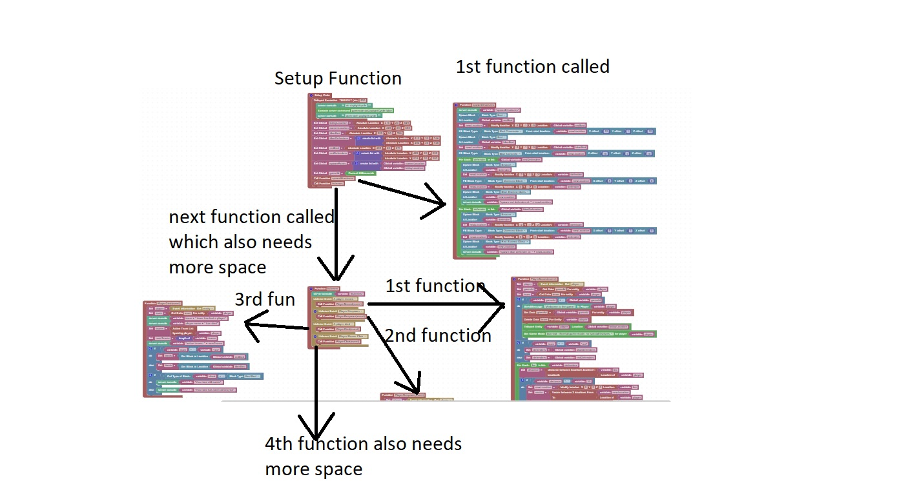

Functional Block Organiation
As you refactor code, and create functions, it's easy to get lost in the forest of functions
The method we will use to organize or functions is top-bottom, using a clock in order of function call
At the very top is the setup code, functions it calls will be arranged in a clock based on order of call
For example the first function the setup code calls will be found at 3 oclock, the next at 6, the next at 9
6 oclock is reserved for those functions that are too large to fit on the clock
These functions will have their own clock, with the first function called at the 3 oclock position
This diagram shows functions with their order of call
